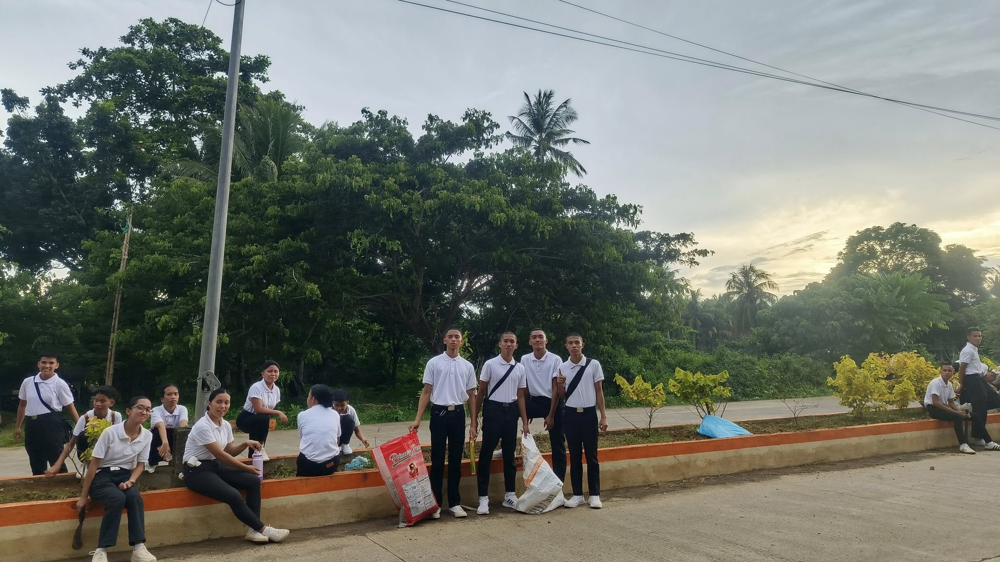
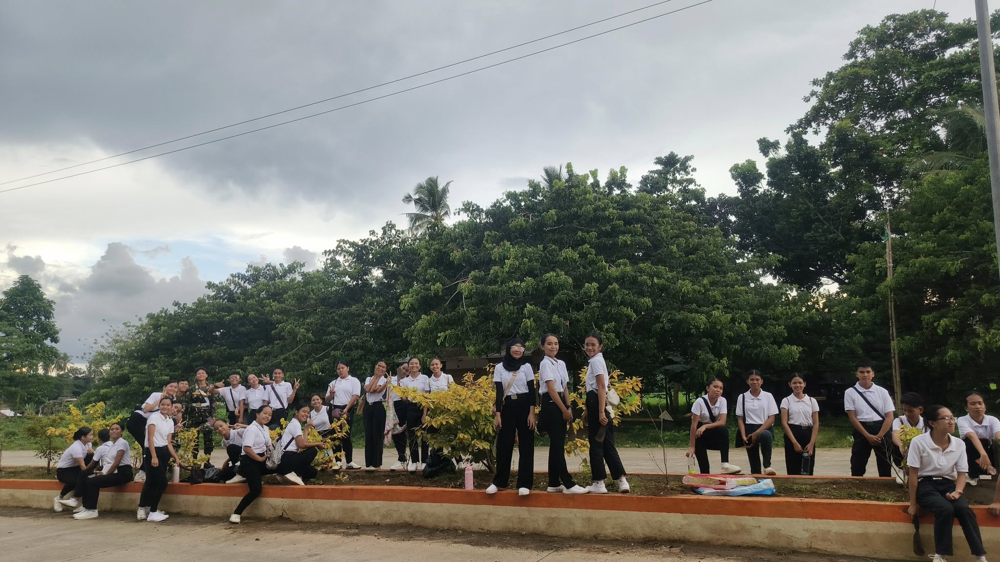
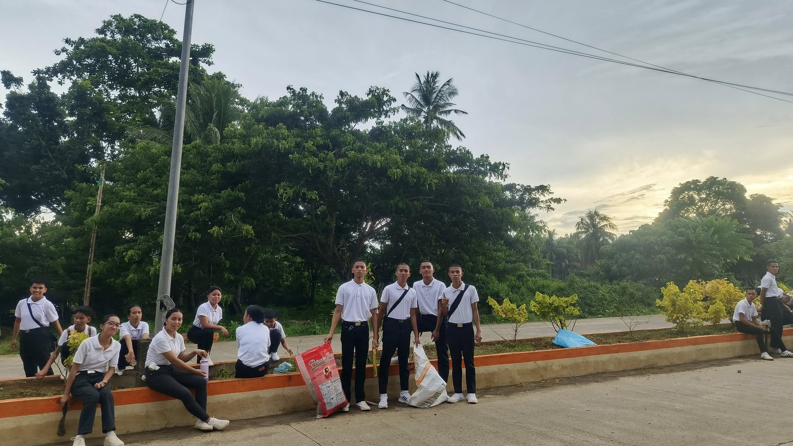
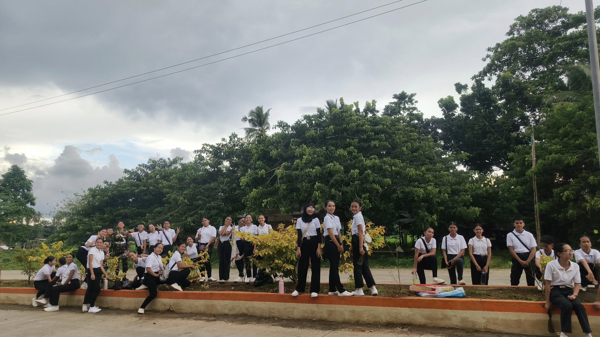

LUX MUNDIS IN ACTION: A HEART FOR THE FIRE VICTIMS OF MANTIC
A little act of kindness from our fellow Lux Mundis, the compassionate students, faculty and staff of Tangub City
Global College who, along with the generous hearts of other donors, came together to extend help and hope to the
victims of the recent fire in Mantic, Tangub City, Misamis Occidental.
Through a collective effort rooted in empathy
and solidarity, various donations were gathered and turned over to the affected families. These were thoughtfully
distributed by the Supreme Student Council of Tangub City Global College, who served not just as student leaders,
but as instruments of service and compassion in this time of need.
To everyone who contributed in any way, whether through goods, time, or prayers. your kindness has made a difference.
May this gesture remind us all that no act of kindness is ever too small, and that in unity, we can spark light even in the darkest of times.
TCGC Cadets Take the Streets
The TCGC ROTC Unit is actively demonstrating its commitment to civic responsibility by initiating a comprehensive Clean-up Drive across the city streets. This significant undertaking directly supports the local community's goal of maintaining exceptional public cleanliness, ultimately contributing to a healthier, more appealing, and harmonious living environment for all citizens.

 


